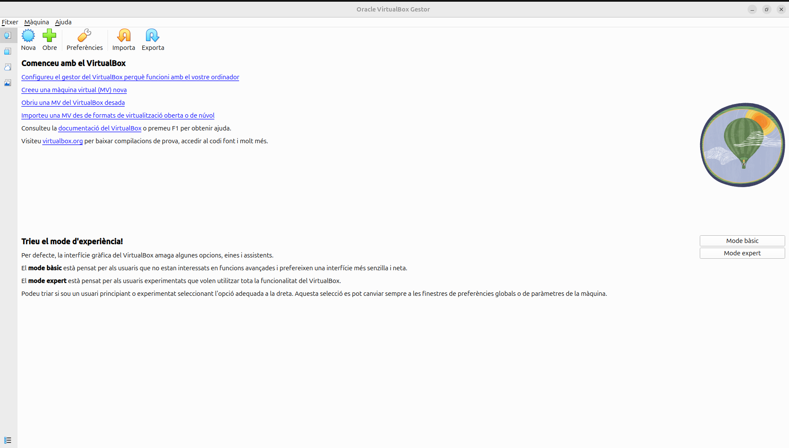
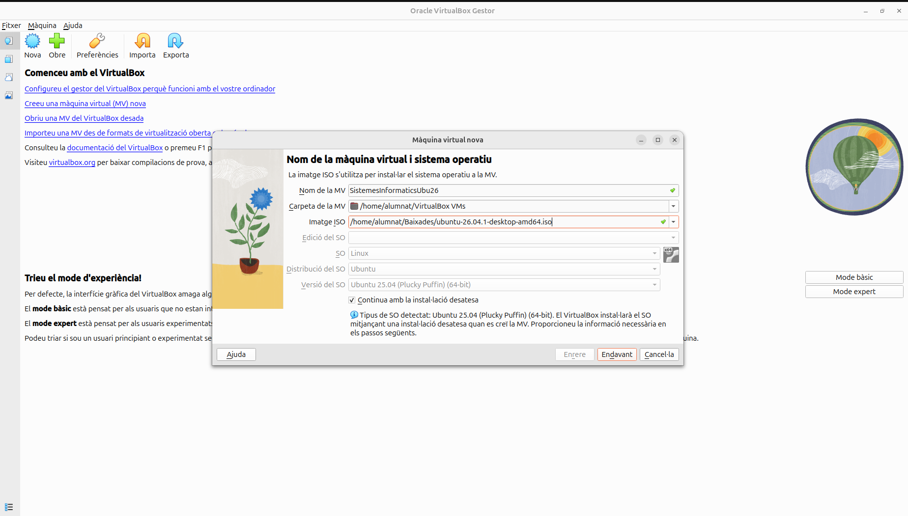
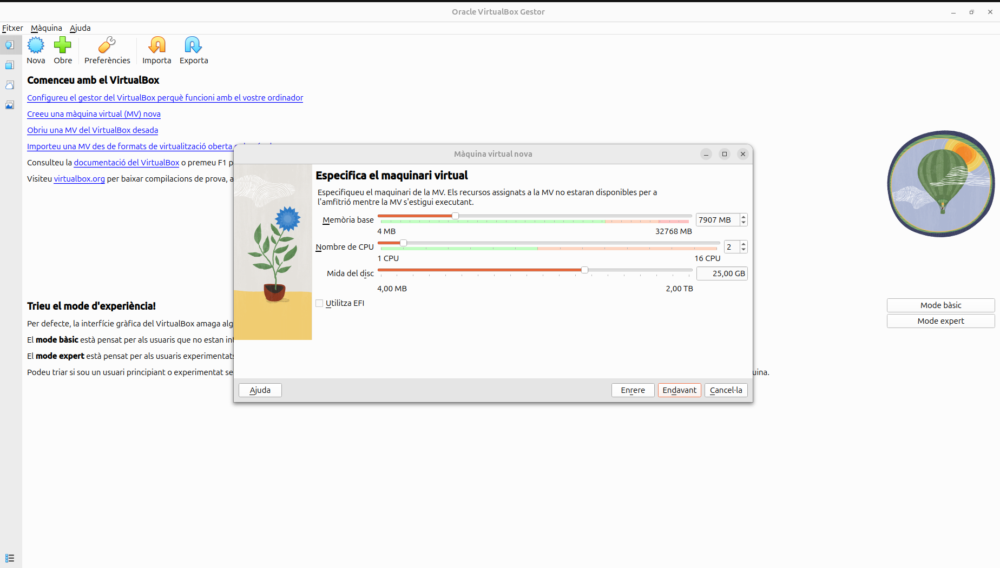
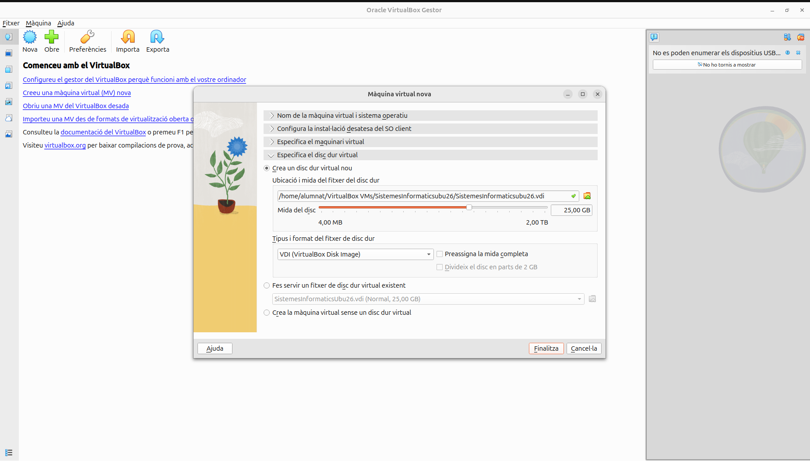

1. Virtualització
1.1 Per crear una màquina virtual que permeti utilitzar un sistema operatiu sense haver d'instal·lar-lo directament a l'ordinador, primer hem d'obrir el programa VirtualBox. Després, hem de prémer el botó «Nova» per començar a crear la màquina virtual.

1.2 En aquest apartat he decidit que la meva màquina virtual s'anomenarà SistemesInformaticsUbu26, he polsat l'apartat de la ISO i he seleccionat la ISO d'Ubuntu 26.04.1.

1.3 He decidit que la meva màquina virtual tingui 7,9 GB i 2 de CPU perquè funcioni de manera fluida.

1.4 Per acabar de crear la màquina virtual hem de pulsar el botó de finalitzar.

↑ Tornar a l'índex
3. Xarxa bàsica
Ut enim ad minim veniam, quis nostrud exercitation ullamco laboris nisi ut aliquip ex ea commodo consequat. La configuració de xarxa és imprescindible per poder actualitzar el sistema i instal·lar programari nou.
- Comprovar l'adreça IP assignada amb
ip a.
- Configurar una IP estàtica si el servei ho requereix.
- Verificar la connectivitat amb
ping.
Duis aute irure dolor in reprehenderit in voluptate velit esse cillum dolore eu fugiat nulla pariatur. Excepteur sint occaecat cupidatat non proident, sunt in culpa qui officia deserunt mollit anim id est laborum.
↑ Tornar a l'índex
5. Instal·lacions aplicacions
Et harum quidem rerum facilis est et expedita distinctio. Nam libero tempore, cum soluta nobis est eligendi optio cumque nihil impedit. Abans de donar per acabat el sprint, revisa aquest resum de les aplicacions instal·lades i que funcionen correctament.
↑ Tornar a l'índex